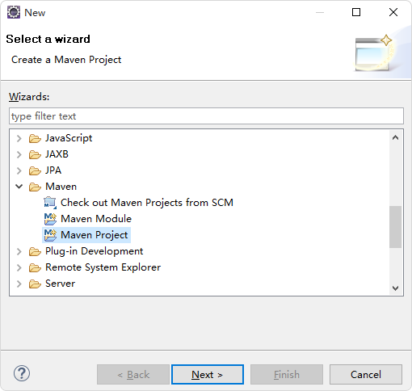
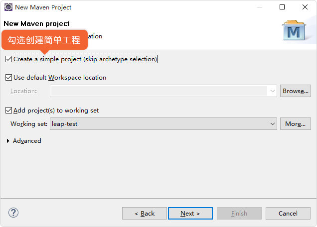
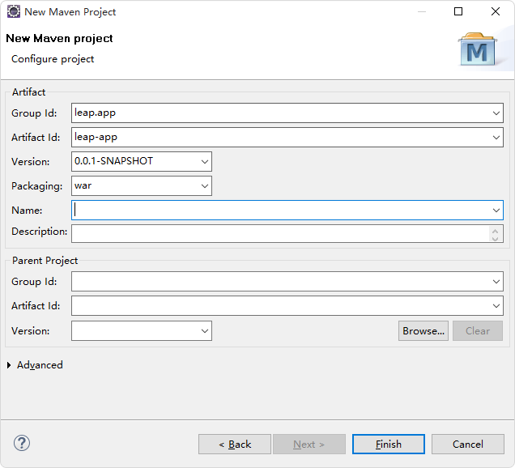
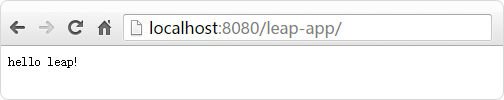

在main/webapp/WEB-INF目录下(没有该目录的话手动创建即可)创建web.xml文件
 1勾选创建简单工程
填写groupid和artifactid，点击finish创建工程
pom.xml中添加leap框架的依赖:
<dependency>
<groupId>org.leapframework</groupId>
<artifactId>leap-fw</artifactId>
<version>0.1.0-SNAPSHOT</version>
<type>pom</type>
</dependency>
web.xml在main/webapp/WEB-INF目录下(没有该目录的话手动创建即可)创建web.xml:
<?xml version="1.0" encoding="UTF-8"?>
<web-app xmlns:xsi="http://www.w3.org/2001/XMLSchema-instance"
xmlns="http://java.sun.com/xml/ns/javaee"
xsi:schemaLocation="http://java.sun.com/xml/ns/javaee http://java.sun.com/xml/ns/javaee/web-app_3_0.xsd"
version="3.0">
<filter>
<filter-name>app-filter</filter-name>
<filter-class>leap.web.AppFilter</filter-class>
</filter>
<filter-mapping>
<filter-name>app-filter</filter-name>
<url-pattern>/*</url-pattern>
</filter-mapping>
</web-app>
HomeController.java类。代码如下:
package app.controller;
import leap.web.Contents;
import leap.web.Results;
public class HomeController {
public void index() {
Results.render(Contents.text("hello leap!"));
}
}
至此环境搭建完成.将应用部署到web服务器(如:tomcat),访应用根目录即可看到:
 4在终端执行如下命令
mvn archetype:generate -DgroupId=leap.demo -DartifactId=leapdemo -DarchetypeArtifactId=maven-archetype-webapp -DinteractiveMode=false
执行成功的结果如下
[INFO] Using following parameters for creating project from Old (1.x) Archetype: maven-archetype-webapp:1.0 [INFO] ---------------------------------------------------------------------------- [INFO] Parameter: basedir, Value: D:\test [INFO] Parameter: package, Value: leap.demo [INFO] Parameter: groupId, Value: leap.demo [INFO] Parameter: artifactId, Value: leapdemo [INFO] Parameter: packageName, Value: leap.demo [INFO] Parameter: version, Value: 1.0-SNAPSHOT [INFO] project created from Old (1.x) Archetype in dir: D:\test\leapdemo [INFO] ------------------------------------------------------------------------ [INFO] BUILD SUCCESS [INFO] ------------------------------------------------------------------------ [INFO] Total time: 5.800 s [INFO] Finished at: 2015-12-31T10:00:39+08:00 [INFO] Final Memory: 16M/166M [INFO] ------------------------------------------------------------------------
生成的目录结构如下
leapdemo
├─pom.xml
│
└─src
└─main
├─resources
└─webapp
│ index.jsp
│
└─WEB-INF
web.xml
编辑pom.xml,添加如下依赖
<dependency>
<groupId>org.leapframework</groupId>
<artifactId>leap-fw</artifactId>
<version>0.1.0-SNAPSHOT</version>
<type>pom</type>
</dependency>
完整的pom.xml如下
<project xmlns="http://maven.apache.org/POM/4.0.0" xmlns:xsi="http://www.w3.org/2001/XMLSchema-instance"
xsi:schemaLocation="http://maven.apache.org/POM/4.0.0 http://maven.apache.org/maven-v4_0_0.xsd">
<modelVersion>4.0.0</modelVersion>
<groupId>leap.demo</groupId>
<artifactId>leapdemo</artifactId>
<packaging>war</packaging>
<version>1.0-SNAPSHOT</version>
<name>leapdemo Maven Webapp</name>
<url>http://maven.apache.org</url>
<dependencies>
<dependency>
<groupId>junit</groupId>
<artifactId>junit</artifactId>
<version>3.8.1</version>
<scope>test</scope>
</dependency>
<dependency>
<groupId>org.leapframework</groupId>
<artifactId>leap-fw</artifactId>
<version>0.1.0-SNAPSHOT</version>
<type>pom</type>
</dependency>
</dependencies>
<build>
<finalName>leapdemo</finalName>
</build>
</project>
在main/webapp/WEB-INF目录下(没有该目录的话手动创建即可)创建web.xml文件:
<?xml version="1.0" encoding="UTF-8"?>
<web-app xmlns:xsi="http://www.w3.org/2001/XMLSchema-instance"
xmlns="http://java.sun.com/xml/ns/javaee"
xsi:schemaLocation="http://java.sun.com/xml/ns/javaee http://java.sun.com/xml/ns/javaee/web-app_3_0.xsd"
version="3.0">
<filter>
<filter-name>app-filter</filter-name>
<filter-class>leap.web.AppFilter</filter-class>
</filter>
<filter-mapping>
<filter-name>app-filter</filter-name>
<url-pattern>/*</url-pattern>
</filter-mapping>
</web-app>
leapdemo/src/main/java/app/controller/HomeController.java创建源文件夹和包
mkdir -p src/main/java/app/controller
创建java文件
vim src/main/java/app/controller/HomeController.java
在vim中输入HomeController.java的代码
package app.controller;
import leap.web.Contents;
import leap.web.Results;
public class HomeController {
public void index() {
Results.render(Contents.text("hello leap!"));
}
}
leapdemo/src/main/java/app/controller
HomeController.java,用文本编辑器编辑如下内容:
package app.controller;
import leap.web.Contents;
import leap.web.Results;
public class HomeController {
public void index() {
Results.render(Contents.text("hello leap!"));
}
}
pom.xml中配置jetty插件
<plugin>
<groupId>org.eclipse.jetty</groupId>
<artifactId>jetty-maven-plugin</artifactId>
<version>9.3.3.</version>
<configuration>
<webApp>
<contextPath>/leapdemo</contextPath>
</webApp>
<connectors>
<connector implementation="org.eclipse.jetty.server.nio.SelectChannel
Connector">
<port>8080</port>
</connector>
<connector implementation="org.eclipse.jetty.server.ssl.SslSelectChannel
Connector">
<port>443</port>
<password>changeit</password>
</connector<
</connectors>
</configuration>
</plugin>
mvn jetty:run
hello world!
mvn package
leapdemo/target下可以看到leapdemo.war包.将这个包放到/webapps下,运行tomcat,并访问localhost:8080/leapdemo即可看到如下结果hello world!